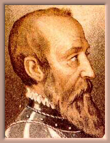

Historia
del castillo de La Calahorra
La historia del castillo de La Calahorra
está íntimamente unida a la de Don
Rodrigo Díaz de Vivar y Mendoza, el
primer marqués de Cenete, a quien se
debe su construcción y que fue uno de
los precursores del Renacimiento
italiano en España.

Rodrigo Díaz de Vivar y Mendoza fue fruto de
los amores ilegítimos del Gran Cardenal
Pedro González de Mendoza, el “tercer Rey de
España”, y de Mencía de Lemos,
dama de compañía de la Reina Juana de
Portugal. La Reina Isabel, pese a ser muy
estricta en cuanto a la moralidad de sus
súbditos, perdonó este desliz de su más
allegado consejero y puso al niño el
sobrenombre de "su más bello pecado”.
Su nombre fue escogido en homenaje a
Rodrigo Díaz de Vivar (1043-1099), el
célebre Cid Campeador (el “señor que gana
batallas”), en quien se inspiró Corneille
para escribir su tragicomedia el Cid, en
1637.
De genio vivo y violento, Don Rodrigo
participó en la guerra de Granada a las
órdenes del segundo Conde de Tendilla,
especialmente en la toma de Baza (1489).
En 1492, se casó con Leonor de La Cerda,
hija del duque de Medinaceli, y se instaló
en Jadraque; tuvieron un hijo que murió
prematuramente.
A la muerte de su padre, en 1495, Don
Rodrigo heredó el castillo de La Calahorra.
Esta imponente fortaleza medieval, aislada
en un lugar inhóspito, fue construida por
los Moros (de ahí su apariencia exterior)
convertidos al Cristianismo, y regalada
posteriormente a la aristocracia local. Se
piensa que sirvió de prisión durante la
Reconquista – aún se pueden ver las celdas
en el interior del castillo. En 1490, los
Reyes Católicos se la regalaron al Cardenal
Mendoza por los servicios prestados y su
lealtad.
Don Rodrigo era de naturaleza frívola, y
tenía fama de mujeriego ; su esposa, cansada
de sus infidelidades y muy afectada por la
muerte de su hijo, murió de agotamiento en
1497.
Felizmente enviudado, Don Rodrigo viajó a
Italia. Le arreglaron una relación con
Lucrecia Borgia, hija del papa Alejandro IV,
con quien no llegó a casarse.
Durante su estancia en Italia, frecuentó los
ambientes literarios y artísticos de Génova
y Florencia. Hombre de cultura y humanista
hasta la médula, entabló una amistad con los
Fedeli d’Amore, con quien compartía las
ideas caballerescas heredadas de los
Templarios - la sociedad secreta de los
Fedeli d'Amore, bajo los auspicios de Dante,
aseguró la supervivencia de la Orden del
Temple, en Italia, después de su disolución
oficial, en 1312. Iniciado en esta orden por
el mismísimo Sandro Botticelli, contribuirá
más tarde a su desarrollo en la península
Ibérica.
Poco después de su vuelta a España, se
enamoró perdidamente de la bella María de
Fonseca y quiso casarse con ella.
Desgraciadamente, por oscuras razones de
patrimonio y con la autorización de la
monarquía española, Don Alfonso de Fonseca
proyectaba casar (a la fuerza) a su hija con
uno de sus primos, por lo que rechazó esta
unión. Haciendo caso omiso, Don Rodrigo se
casó con María en secreto, con el
consentimiento de la madre de ésta. Furiosa
por este acto de desobediencia
característico, La Reina Isabel anuló el
matrimonio y encerró a Don Rodrigo en el
castillo de Cabezón.
A la muerte de Isabel, en 1504, fue liberado
por Felipe el Hermoso, el nuevo rey de
España. Aún locamente enamorado de María de
Fonseca, llevó a cabo un plan para sacarla
del convento en el que estaba recluida desde
su separación. En 1506, se volvieron a casar
en Jadraque, esta vez de manera oficial, y
se instalaron en el castillo de La
Calahorra. Mencía, su primera hija, nació en
1508, y luego vino María, su segunda hija,
dos años más tarde.
Entre 1509 y 1512, para comodidad de su
esposa y sus hijas, Don Rodrigo hizo
construir el magnífico palacio renacentista
que se sitúa en el interior del castillo.
El proyecto se encargó a Lorenzo de Vázquez,
arquitecto de la Casa Mendoza, y la
decoración se confió a Michele Carlone, de
Rovio, y a los escultores Egidio, Pietro y
Giovanni de la Verda, de Gandria – la
escalera que lleva a la galería superior
está hecha en mármol de Carrara,
directamente importado de Italia.
Más tarde, Don Rodrigo fue nombrado
gobernador de Valencia, y se instaló
definitivamente en esta ciudad donde murió
el 22 de febrero de 1523. Su cuerpo descansa
en el convento de Santo Domingo de Valencia.
De educación culta y refinada, la biblioteca
de Don Rodrigo Díaz de Vivar y Mendoza
poseía la nada despreciable cifra de 631
manuscritos, en 1523, algo excepcional para
la época. En la encrucijada de dos mundos,
apreciaba tanto la rusticidad de la Edad
Media como el refinamiento del Renacimiento.
Su castillo de La Calahorra refleja esta
doble particularidad, a la vez medieval,
masculino, en el exterior, y sensible,
femenino, en el interior.